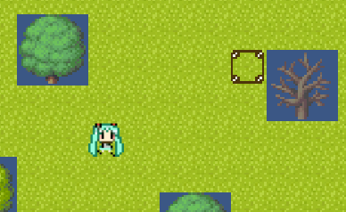
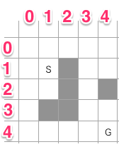
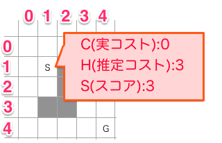
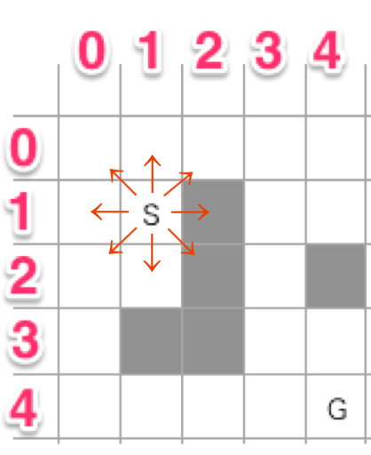
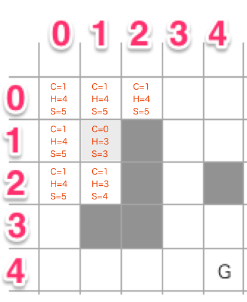
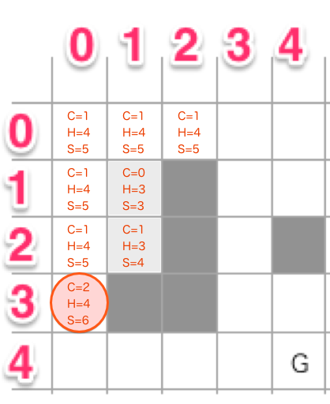
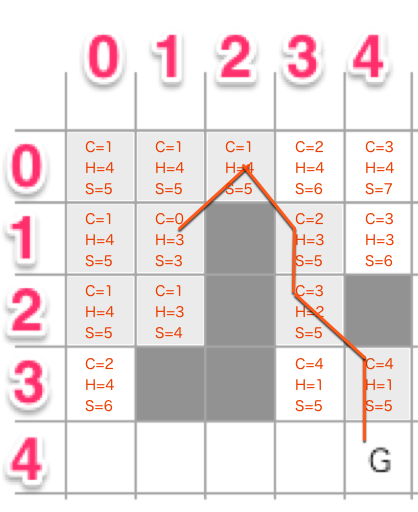

アルゴリズム_files/medium(2).jpg)
アルゴリズム_files/026_normal.JPG)
アルゴリズム_files/kmaeda_z_160_normal.jpg)
A*(A-star)アルゴリズムとは
A*アルゴリズムとは、探索アルゴリズムの一種です。経路をノードで表現して、スタートノード（開始地点）からゴールノード（目標地点）までの経路を計算し、この経路が最短であることを保証するアルゴリズムとなります。そしてスタートからゴールまでの間に障害物があってもちゃんと迂回してくれます。

サンプル
サンプルはこちらのページにあります。
http://2dgames.jp/unity/astar/
ページを開くとランダムでスタートとゴールが決まり、キャラクターがゴールへ向かって動きます。ゴールにたどりつくと、「もう１回」ボタンが表示されるので、それを押すと再びスタートとゴールがランダムで配置されます。
なお、Unity(C#)で実装したプロジェクトつきです。こちらのソースコードは自由につかってもらって構いません。ただし画像の2次使用は禁止します。
A*の実装
フィールドの定義
まずはフィールド（地形）をどのように探索するのかを定義します。

今回はわかりやすいように「5x5」の2次元のXYの正方形グリッドとしました。Sがスタート地点、Gがゴール、灰色の部分が移動不可能で、そして移動コストはすべて「1」となります。そして斜め移動を許可します。
もし有機的で複雑な地形を扱う場合は、リンク付きノードの経路（リンクを管理する仕組み）を用意する必要があります。
ノードデータの設計
通過可能なノードデータ (Nodeクラス) は以下のように定義します。
- XY座標
- ステータス（Nonw -> Open -> Closed)
- 実コスト
- 推定コスト（ヒューリスティック・コスト）
- 親Nodeクラスのポインタ
ステータスとはノードの状態をあらわします。初期状態はNoneとなっていて、Open、Closed、という状態へ遷移していきます。実コストは移動するための実際のコストです。推定コストというのがA*のキモとなります。これは「ゴールまでおそらくこれぐらいの移動コストがかかるだろう」という推測の値となります。最後の親Nodeポインタは、経路を求めるときに役に立ちます。
探索を開始
まずはスタート地点 (1,1) のノードを作成し、状態をNoneからOpenにします。ノードをOpenするときに以下の処理を行います

- 実コストを求める（開始地点なので「0」）
- 推定コストを求める
- 斜め移動を許可する場合は以下の式で求める (tx/tyはゴール、x/yは基準ノード)
- dx = tx - x = (4 - 1) = 3
- dy = ty - y = (4 - 1) = 3
- dx と dy を比較して高い値が推定コストとなる (ここでは「3」が推定コストとなる）
- なお縦横(4方向)移動のみ許可する場合、推定コストは dx + dy
- 斜め移動を許可する場合は以下の式で求める (tx/tyはゴール、x/yは基準ノード)
- スコアを求める
- スコアの値は「実コスト＋推定コスト」= 0 + 3 = 3
- よってスコアは「3」となる
- スコアの値は「実コスト＋推定コスト」= 0 + 3 = 3
- 親Nodeポインタは開始地点なので null
周りをOpenする
次に周りをOpenします。

斜め移動を許可しているので周り8方向を開きます。なお縦横移動のみ許可している場合は4方向だけ開きます。
周り8方向をOpenすると結果は以下のようになります。

一歩進んだので、実コストが「1」増えています。今回はすべての移動コストを1としていますが、もし森は2必要、山岳は3必要、という数値があればそれを使用します。
スタート地点のノードは、周りをOpenするという役目を終えたので、Closed状態にしておきます。なおOpenできるのは、「移動可能な地形かつNone状態のノード」のみとなります。
そして、Openしたノードには親ノード（スタート地点のノード）のポインタを設定して、Openリストというものに入れておきます。これは次にOpenするノードの基準ノードを検索するための一時的な箱となります。
基準ノードの判定
基準ノードの判定は、「スコアが最も小さいノード」を選びます。ここまででは(1,2)のスコア(S)が「4」となっており最小です。なので、このノードの周りをOpenします。

とは言うもののOpenできるのは(0,3)のみです。ここをOpenするとスコアは6になります。なお基準ノードは周りをOpenしたらClosedにしておきます。
そうするとスコアが「5」のものがいくつか存在します。どれも周りにOpenできるものがないので次々にClosedしていきます。このように「基準ノードを検索 > 周りをOpen > 基準ノードをClosed」を繰り返していきます。
「基準ノードを検索 > 周りをOpen > 基準ノードをClosed」を繰り返すと……

こんな感じでゴールまでたどりつくことができます。
経路を取得するには
ゴール座標にたどりついたとき、ゴールノードを取得できているはずです。このノードから親ノードポインタを再帰的にたどると、スタートノードまでたどりつきます。
ゴール ...................................... スタート
(4,4) -> (4,3) -> (3,2) -> (3,1) -> (2,0) -> (1,1)
これはC#のコードであれば、以下のように記述できるはずです。
/// パスを取得する
public void GetPath(List<Point2> pList) {
// リストに座標情報を追加していく
pList.Add(new Point2(X, Y));
if(_parent != null) {
// 再帰的に親ノードをたどる
_parent.GetPath(pList);
}
}
これで逆順の座標リストが手に入るので、あとはList.Reverse()してやると、スタート地点の座標からゴール地点までの座標リストとなります。
以上で、A*アルゴリズムの実装方法の説明は終わりとなります。
＃＃＃＃＃＃＃＃＃＃＃＃＃＃＃＃＃＃＃＃
以下は補足事項です
＃＃＃＃＃＃＃＃＃＃＃＃＃＃＃＃＃＃＃＃
最適化のヒント
A*は結構重たい処理でCPU時間をかなり消費します。そのため実際にゲームに組み込む場合は以下のことに注意します
- 計算で求めた移動経路はキャッシュしておく（毎フレーム計算しないようにする）
- 時間がかかる場合には、途中で計算をやめて次フレームに処理をまわす
- 遠すぎる場合は計算しない。他のAIルーチン（巡回ルートを通るなど）に切り替えるようにする
- 遠すぎる場合は途中まで計算して、その暫定結果から経路を決める、という方法もあります (最短ではないもののある程度は正しい経路となる)
- ただし、迷路のような障害物が多い場合はうまくいきませんが……
- 遠すぎる場合は途中まで計算して、その暫定結果から経路を決める、という方法もあります (最短ではないもののある程度は正しい経路となる)
そしてやや高度なテクニックですが、「グリッドよりも大きく空間分割して計算量を減らす」という方法もあります。
サンプルコードの簡単な説明
サンプルコードのC#の簡単な説明は以下のとおりです
- AStar.cs : A*計算モジュール
- ANodeクラス: A*ノード
- ANodeMgrクラス: A*ノード管理クラス
- Token.cs : ゲームオブジェクト
- TokenMgr.cs : ゲームオブジェクト管理
- Layer2D.cs : 2次元配列管理
- TMXLoader.cs : Tiled Map Editor読み込みモジュール
- Util.cs : ユーティリティ
スコアが同じ場合の計算優先順位
本文では説明しませんでしたが、 スコアが同じ場合、実コストを優先して基準ノードとしないと最短ルートとならない ケースがあります。たとえば以下のように判定を入れる必要があります
/// 最小スコアのノードを取得する.
public ANode SearchMinScoreNodeFromOpenList() {
// 最小スコア
int min = 9999;
// 最小実コスト
int minCost = 9999;
ANode minNode = null;
foreach(ANode node in _openList) {
int score = node.GetScore();
if(score > min) {
// スコアが大きい
continue;
}
if(score == min && node.Cost >= minCost) {
// スコアが同じときは実コストも比較する
continue;
}
// 最小値更新.
min = score;
minCost = node.Cost;
minNode = node;
}
return minNode;
}
この理屈ですが、推定コストはあくまで推定なので、スコアが同じ場合は実コストを優先して処理したほうがうまくいく、ということとなります。
アルゴリズム_files/tshrit-banner-1887b87e263189c31b06713e596f4309.gif)